生成的 3D 資產只有表面：image-to-3D 模型在外表面輸出完整 PBR 材質，內部生成方法把體積填成顏色而已，物理感知的管線則每個 part 一組均勻參數。對所有現有方法而言，一顆橘子是一個 part、一種物質。本專案把一個由少量切面照片合成的內部體積，分解成一個異質、可模擬的材質場：皮、果肉、纖維組織各有各的力學，切開的面可重光照，刀鋒切過時的阻力隨材質變化。
中文。生成的 3D 資產止於表面：image-to-3D 模型在外表面輸出完整 PBR 材質，內部生成方法只把體積填成顏色，物理感知的管線則給每個 part 一組均勻參數，於是一顆橘子對所有現有方法而言都是單一物質。我們把一個由少量切面照片合成的內部體積，變成異質、可模擬的實心體。材質清單在真實切面照片上學到（三加三張，對六顆沒看過的橘子轉移一致性 0.93），經虛擬切片反投影成偽標籤；一個定義在圓柱格上的神經材質場（NMFS）在沒有任何 3D 標籤的情況下，以偽標籤交叉熵、兩族切面一致性、各向異性幾何先驗與夾雜物 head 學出每個 cell 的物質類別。每種物質綁定力學參數並寫回資產的每個 voxel，切割是格上的拓撲事件，碎片各自帶著材質。在同一顆橘子、同一 solver 上，異質場產生皮的進出雙峰切削力曲線、碎片接觸數為同質場的 40%、落地時內部被皮屏蔽；按顏色指派材質的規則在橘子上找不到皮，因為外皮與果肉同色。
English. Generated 3D assets stop at the surface: image-to-3D models emit full PBR materials on the exterior, interior-generation methods fill the volume with colour and nothing else, and physics-aware pipelines assign one material per part, so that to all of them an orange is a single substance. We turn a volumetric interior synthesised from a few cross-section photographs into a heterogeneous, simulation-ready solid. The material inventory is learned on real cut photographs (3+3, transferring to six unseen oranges at 0.93 agreement) and back-projected into the volume as pseudo-labels; a neural material field on the cylindrical lattice (NMFS) is trained with no 3D labels from pseudo-label cross-entropy, cross-family consistency, an anisotropic anatomical prior and an inclusion head. Each substance is bound to mechanical parameters and written into every voxel of the asset, so a planar cut is a topological event on the lattice and every fragment carries its material. On the same orange and the same solver, the heterogeneous field yields the peel entry/exit spikes in the cut-force profile, 40% of the homogeneous field's fragment contacts, and an interior shielded by the shell on impact; colour-based assignment finds no peel on the orange at all, because skin and flesh share a colour.
逐篇查證最近的方法在材質上的粒度。論文的新穎性主張就落在這張表上。
| 方法 | 材質粒度 | 內部怎麼拿到材質 |
|---|---|---|
| PhysX-Anything（CVPR 2026） | 每個 part，輸出 URDF / XML | 沒有內部場，part 內均勻 |
| PhysX-Omni（2026） | 每個 part，part 級 voxel grid | 同上 |
| VoMP / AdaVoMP（ICML 2026） | 逐 voxel，但標注是 part 級 | 自述「we treat each part as having isotropic material」；限制段落承認對木材等不成立 |
| Pixie / UniPixie | 逐 voxel 64³ | 標籤來自表面語意分割，內部繼承 part 標籤；遮蔽區域列為未來工作 |
| Phys4DGen（ACM MM 2025） | 逐粒子 | 沿六軸投射射線，把最常見的表面材質複製進內部 |
| GaussianFluent（CVPR 2026） | 逐 Gaussian | 唯一有 part 內異質的，但是人手按顏色指派；limitation 自述參數手動設定、希望以逆渲染或學習自動化 |
每個前提都先量，量到反的就改設計。這一節的結果直接決定了後面管線的形狀。
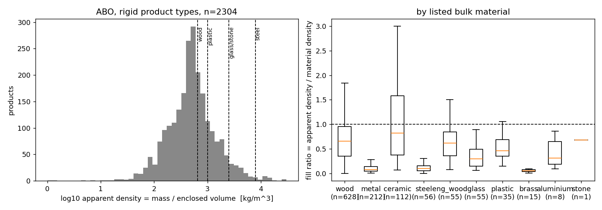
填充率中位數 1.00，有封閉空腔的只有 3 個。空心是產品層級的（管件、板件圍成的盒），不是零件層級的。在 711 個組件上：13% 填充率低於 0.8；空心組件用均勻實心算慣量錯 24%，已知質量的等壁厚殼把它壓到 5%。這條線因此被判定「痛點在質量而不在結構」而放下，數字保留。
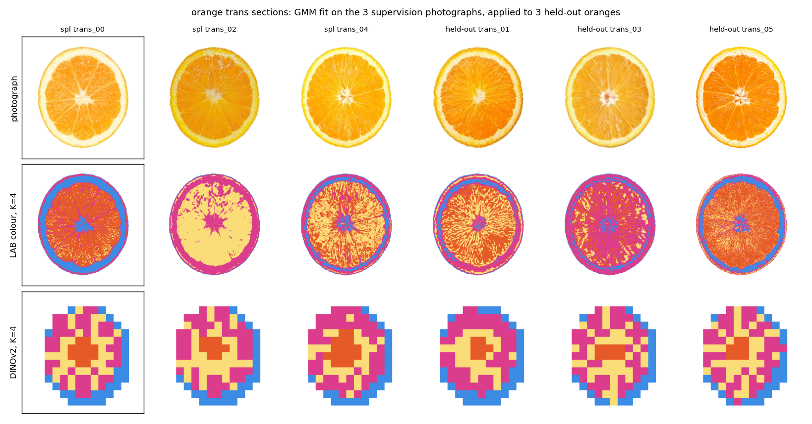
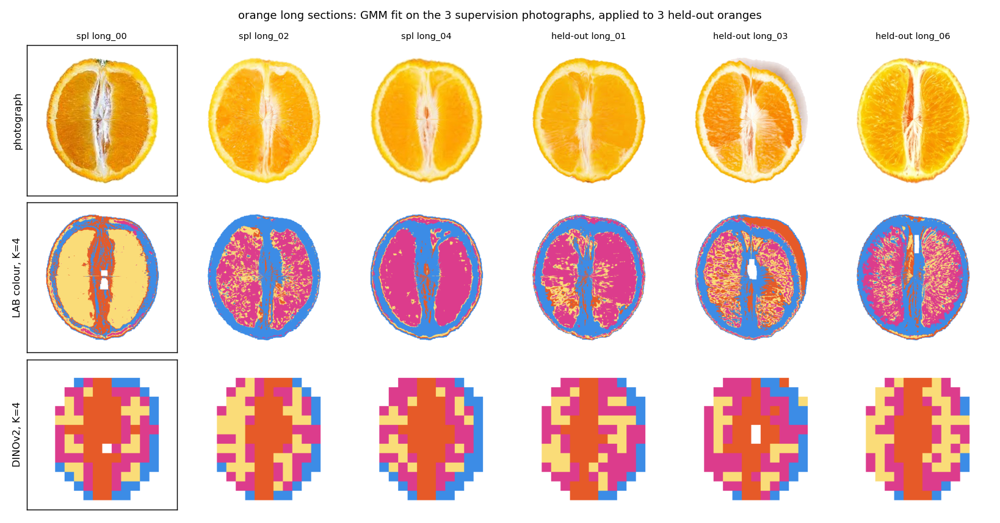
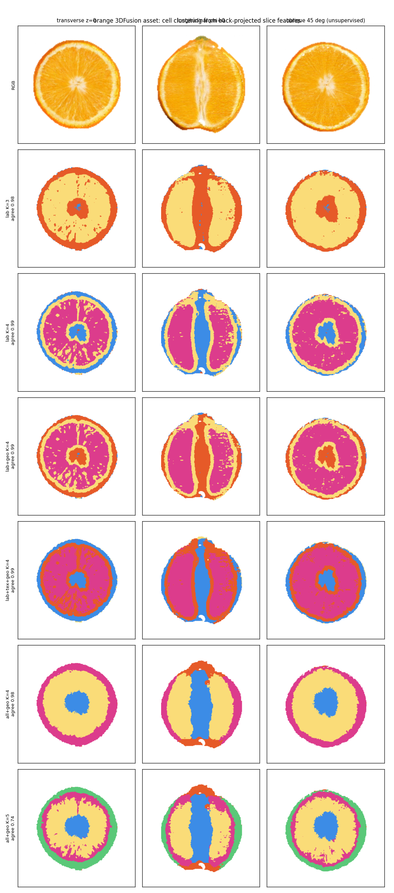
三個設計決定，各對應第 2 節的一個量測：材質清單在真實照片上學（2.3），不在生成體積上發明；2D 到 3D 不做 PoE 提升，因為資產本身一致（2.4）；shell cell 依 cell_level 直接定為皮，分類器只管 core，因為 CORE 只到 r≈0.8，真正的皮不在分類範圍。
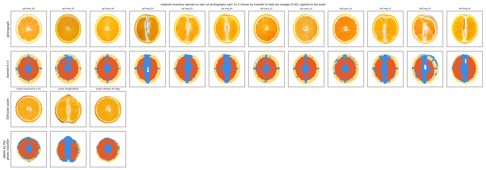
| K | spl → held-out 橘子的 Hungarian 一致性 |
|---|---|
| 3 | 0.933 |
| 4 | 0.610 |
| 5 | 0.602 |
| 6 | 0.693 |
真實資料支持的清單是三類：皮、果肉、白色纖維組織（中柱、囊瓣膜、白絡）。資產上兩族（橫切 vs 縱切）的標籤不一致 0.19，這是本質的：橫切看到放射狀的膜，縱切看到一根中柱，同一個 cell 的 2D 判斷本來就不同；每族用中央切片統計白化只把極區從 0.26 降到 0.17，中段不變。
Mθ : (PE(r,φ,z), Ft, Fl, 局部上下文) ↦ (Pt, Pl, P, Pincl)。每 cell 的 MLP 加位置編碼，每族一個 head 看自己族的反投影特徵，融合 head，薄的週期性 3D conv 給局部上下文，夾雜物 head 保住薄結構。全程沒有一張 3D 標籤。
| 損失 | 內容 | 訊號來源 |
|---|---|---|
| Lpseudo | 高信心 cell 上，P 對照片分類器反投影標籤的交叉熵 | 真實照片，弱監督 |
| Lcross | 對稱 KL(Pt ‖ Pl) | 兩族各自的特徵，自監督 |
| Lgeom | 沿 r 的 L1（便宜）、沿 φ 與 z 的 L2（昂貴）；夾雜物 cell 豁免 | 解剖先驗：組織徑向分層、切向延展 |
| Lincl | focal loss，目標是核心區外的纖維組織 | 膜與白絡 |
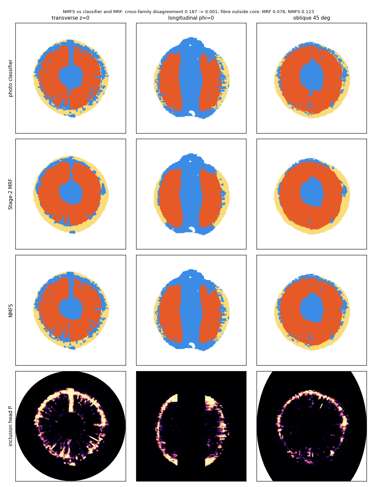
| 指標（橘子） | 分類器 | GMM + MRF | NMFS |
|---|---|---|---|
| 兩族不一致 | 0.187 | 0.188 | 0.001 |
| 在非信心 cell 上與分類器一致 | — | 0.67 | 0.84 |
| 核心區外的纖維組織（膜的保留） | 0.122 | 0.078 | 0.123 |
| 斜切變化率 / 橫切變化率 | — | 0.033 / 0.043 | 0.052 / 0.069 |
| 訓練時間 | — | 秒級 | 265 s |
要打折讀的是 0.001：兩個 head 共用類別層又被 KL 拉在一起，一致性是建構出來的。有意義的是第二行：偽標籤只用了信心高的 cell，其餘 cell 從未進過交叉熵，NMFS 在它們上與 held-out 驗證過的分類器有 0.84 一致。缺點是皮與果肉的邊界有斑點。
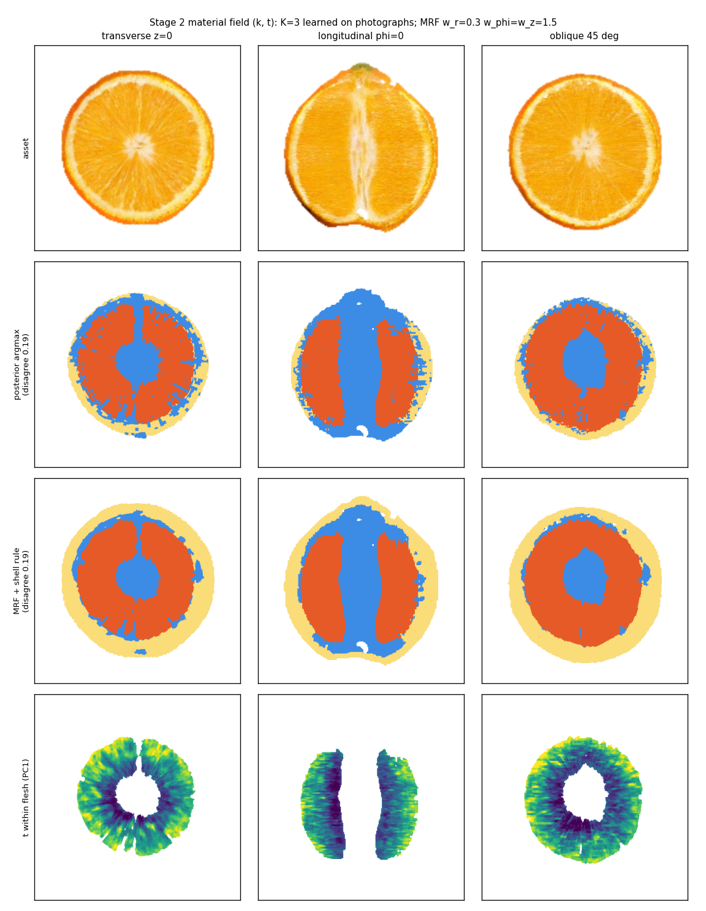
刀鋒是躺在切面上的直線，沿 d 前進；F(s) = Σ刀鋒前緣 τ(k(x))·dl。τ 是相對值（皮 1.0、纖維 0.5、果肉 0.15），只宣稱曲線形狀。
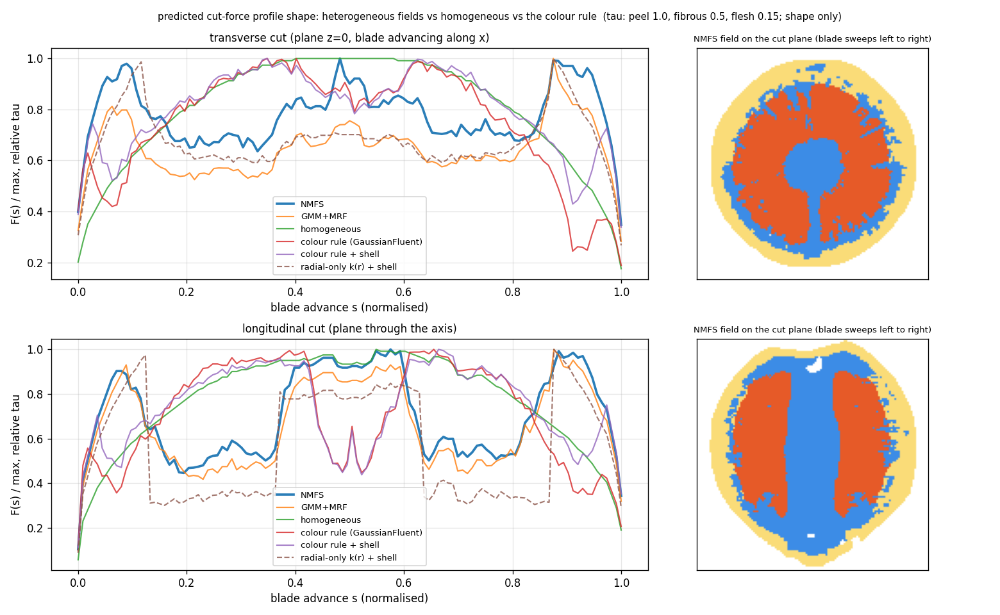
| 橫切 | 進出峰 | 果肉平台 | 中心 / 平台 |
|---|---|---|---|
| NMFS | 0.98 | 0.70 | 1.27 |
| GMM + MRF | 0.85 | 0.59 | 1.21 |
| 同質 | 0.60 | 0.93 | 1.07 |
| 顏色規則（GaussianFluent） | 0.63 | 0.92 | 0.92 |
中柱那個特徵是凸是凹取決於 τ纖維 與 τ果肉 的相對大小，論文不預先宣稱方向，留給荷重元。
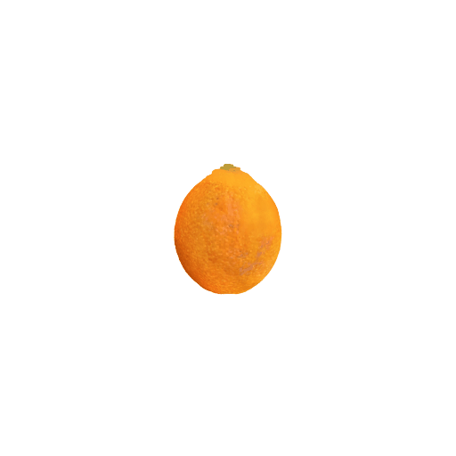
| NMFS | uniform | 顏色規則 | |
|---|---|---|---|
| 碎片數 | 6 | 6 | 6 |
| 最後 40 幀的平均接觸數 | 6,438 | 16,113 | 12,532 |
硬皮讓碎片不會攤開、互相壓疊，接觸數差 2.5 倍。工程上的一個發現：fruit 類別範圍把皮映到 8e6 Pa，在預設 dt=3e-4 的 CFL 餘裕只有 1.29 倍，Warp 報 illegal memory access；dt 減半到 1.5e-4（餘裕 2.6 倍）三次全跑完、零錯誤。
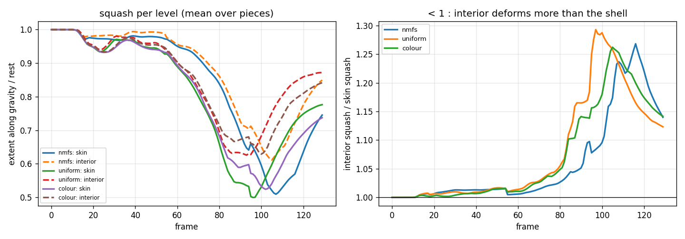
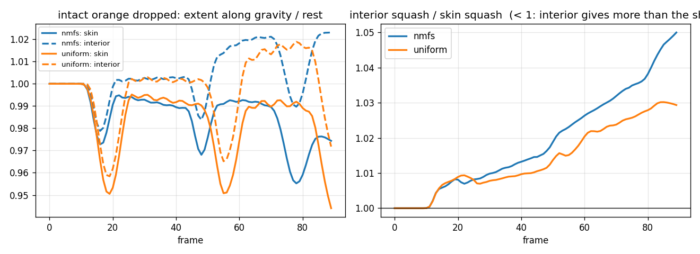
| NMFS | uniform | |
|---|---|---|
| 第一次落地，皮的最小伸展比 | 0.973 | 0.951 |
| 第一次落地，內部 | 0.979 | 0.958 |
| 第二次彈跳的時間 | 約第 48 幀 | 約第 55 幀 |
| 內部 / 皮（落地時） | 1.036 | 1.008 |
硬皮讓整顆變形少一半、彈得更快，內部被皮屏蔽。效果是百分之幾，因為落地很輕、皮只有一到三個 cell 厚；這是 E6 的模擬版本，荷重元的壓縮曲線才給它真實的數字。
切割時碎片要帶著材質，材質就得住在 cell 上，不能只是外面的一張表。code/attach_material.py 把 NMFS 的場寫回 3DFusion 的 lattice 資產（trained/orange.ply 經 writeback.py 寫入 3DFusion 內部顏色後，1,162,387 個 cell）：
| 檔案 | 內容 | 用途 |
|---|---|---|
orange_phy.ply | 原資產加三個每 cell 屬性：mat_label（0 纖維、1 果肉、2 皮）、mat_E（Pa）、mat_t（類內連續調變） | 任何按名字讀欄位的載入器都能直接用；現有 3DGS 載入器讀 x/y/z/f_dc/opacity 等欄位，多出的屬性不影響 |
orange_phy_material.pt | 同一場的張量：labels、E、t，與 PLY 同順序 | 切割管線讀 labels（MATERIAL_LABELS），每個 cell 進 solver 時帶自己的 E、ν、ρ |
orange_phy_matview.ply | 同幾何、f_dc 換成類別顏色 | 「材質視圖」：同一個物理過程，用材質上色渲染 |
皮 656,761 個 cell（含 cell_level 為 1 的 480,287 個 shell cell）、果肉 341,239、纖維組織 164,387；E 由類別範圍給定（fruit：2e5 到 8e6 Pa）。切割是連通元件，cell 不會被刪除或搬家，所以碎片天然帶著自己的材質。
GaussianFluent（CVPR 2026）有程式碼與 22 個資產，但沒有切割實驗：slicing 只在能力清單裡，沒有刀具模型、沒有切割指標，評估是 CLIP score 與使用者研究。它的混合材質只有西瓜一個物件，規則是一句話：按 Gaussian 的顏色指派。所以我們不是在它的 benchmark 上贏它，而是提出它沒有的評估，它的規則是這個評估裡的 baseline。
| 物件 | 顏色能不能分開物質 | 預期結果 |
|---|---|---|
| 西瓜 | 能：籽黑、瓤紅、皮綠 | 平手，主動報告 |
| 橘子 | 不能：外皮與果肉同為橘色，中柱與白絡同為淡色 | 贏，6.1 已量到顏色規則找不到皮 |
| 吐司 | 肉桂捲顏色找得到；crust 對 crumb 是紋理差異 | 只在 crust / crumb 贏 |
對它的宣稱不是能力，人手挑門檻也能做出異質場；宣稱是自動、從切面照片來、一個程式不調參、而且在顏色與材質不一致處是對的。
四個軸，每個軸一組對手、一個指標、一個預期。對手的程式碼全部查證可取得，不是只重寫規則。
| 軸 | 對手 | 在我們的物件上怎麼跑 | 指標 | 預期 |
|---|---|---|---|---|
| A. 內部有沒有材質 | FruitNinja、GaussianFluent 內部填充、3DFusion 自己 | 它們的資產直接切開渲染 | 有無材質通道；重光照 LPIPS（烘焙 RGB 就是它們） | 全是烘焙顏色，換光源就失效 |
| B. part 級物理預測 | PhysX-Anything（CVPR 2026）、PhysX-Omni、VoMP（ICLR 2026，公開權重）、Pixie、NeRF2Physics | 餵橘子外觀，取它們的材質場，切同一個 45° 斜面 | 斜切類別面積比對真實斜切照片的 KL；力曲線形狀；接觸數 | 整顆一種材質，皮佔比 0 或 100%，力曲線是弧 |
| C. 顏色指派 | GaussianFluent 規則（自動化重實作）+ 它的 solver 跑它的西瓜 | 橘子用我們的重實作，西瓜用它的原始碼與資產 | 同 B | 橘子找不到皮；西瓜平手，主動報告 |
| D. 光學估計 | RGB↔X（SIGGRAPH 2024）、SuperMat（ICCV 2025）、IntrinsicAnything | 對切面照片逐像素估 SVBRDF，不做每類約束 | 同一面漫射→閃光的重渲染 LPIPS / PSNR | 濕高光被烘進 albedo；每類約束贏 |
| E. 材質分割 | LAB K-means、DINOv2 原始分群、SAM2 自動遮罩、規則式 material_field.py | 在人工標注的 held-out 照片上 | mIoU | — |
順序：Pixie 與 VoMP 各一天（有權重，輸入可直接餵資產），PhysX-Anything 一天，GaussianFluent 原始碼跑西瓜一週（配環境），RGB↔X 與 SuperMat 半天但等拍攝。B 軸不是比準確度，是比「表達得了與否」：它們給橘子一種材質，真實斜切照片說有三種。
| 實驗 | 決定什麼 | 狀態 | |
|---|---|---|---|
| E0 | 特徵解析度修正後的分群 | Stage 1 能分出外皮與中柱以外的東西嗎 | 完成 |
| E1 | 六個物件的材質清單 | 資料支持幾種物質 | 橘子 K=3 完成，其餘待資產 |
| E1b | 顏色可分性稽核 | 對決能在哪些物件贏 | 橘子完成（顏色找不到皮） |
| E2 | 對人工標注的 mIoU 與消融 | 特徵堆疊值不值得 | 待標注 |
| E3 | 3D 場一致性、斜切、夾雜物尺寸 | 提升品質 | NMFS 完成 |
| E4 | 每類 SVBRDF + SSS 擬合、held-out 光照 | 證偽者 F3 | 待拍攝 |
| E5 | 切削力曲線對實測 | 證偽者 F2 | 預測完成，待荷重元 |
| E6 | 壓縮曲線 | 彈性合理性 | 模擬完成（落地），待荷重元 |
| E7 | 即時切割 demo | 系統宣稱 | 完成，labelling 60–190 ms/刀 |
| E8 | 六物件一個程式不調參 | 泛化 | 待資產 |
| E9 | 對 PhysX-Anything / GaussianFluent 正面對決 | part 級假設失效 | 顏色規則完成，GaussianFluent 原始碼待跑 |
| 月 | 工作 |
|---|---|
| 1 | E0、E1、E2；荷重元 rig；標注 |
| 2 | E3 完整六物件、夾雜物橢球 |
| 3 | E4 光學擬合、背光校準 |
| 4 | E5、E6 實測 |
| 5 | E7、E9，含一週跑 GaussianFluent 原始碼 |
| 6 | E8 掃描、消融、寫作；投 SIGGRAPH Asia |
2026-09-04 決定不做實體力學量測。主張跟著移：力學從「驗證過」變成「示範它改變行為」，量化支柱換成光學與結構。每個主張對應一個指標、一份資料。
| 主張 | 指標 | 資料 | 狀態 |
|---|---|---|---|
| 材質清單來自真實資料且可轉移 | held-out 個體的 Hungarian 一致性 | 已有的 3+3 與 held-out 照片 | 0.93，完成 |
| 3D 場是對的 | 真實 45° 斜切的類別面積比對資產斜切的 KL / Wasserstein；囊瓣膜數量與間距（橘子 9–12 片）、籽的尺寸與長寬比（西瓜） | 每物件一張未參與生成與訓練的斜切照片 | 待拍 |
| 3D 場是一致的（診斷，只與外部參照並列） | 交線一致性；非信心 cell 與分類器一致 | 已有 | 0.001 / 0.84，完成 |
| 切面可重光照 | 同一真實切面：漫射光擬合、閃光燈預測，LPIPS / PSNR 對烘焙 RGB 與均質材質 | 每個切面漫射與閃光各一張 | 待拍、待 Mitsuba 擬合 |
| 異質性改變行為（示範） | 力曲線形狀、碎片接觸數、落地屏蔽 | 已有 | 完成，3DFusion 資產版執行中 |
| 對 GaussianFluent | 真實斜切的皮佔比（約 15–20%）對顏色規則的接近 0 | 同上斜切照片 | 待拍 |
代價是一個下午的手機拍攝與約兩週的 Mitsuba 3 擬合，後者本來就在計畫裡；省掉的是硬體，不是時間。
方法能不能用，看它接進既有管線要付多少。全部在一張 RTX 3090 上量。
| 步驟 | 規模 | 時間 / 記憶體 |
|---|---|---|
| Stage 1：128 張橫切 + 64 張縱切的 DINOv2 反投影 | 6.3M 個 core cell × 99 維 | 188 s |
| 照片分類器（GPU GMM，K=3..6 各兩次）+ 資產標記 | 12 張照片、192 張虛擬切片 | 150 s（sklearn 版 GMM 單獨就要 15 分鐘以上） |
| NMFS 訓練 | 2,500 步 × 32k cell × 4 個鄰居 | 265 s |
| 切割：連通元件重標 | 877k cell | 61–186 ms / 刀 |
| MPM 模擬 + 渲染 | 877k cell，60 substeps / 幀 | 395 ms / 幀（約 2.5 fps） |
| 3DFusion 資產的 MPM | 1.16M cell | 21 GB GPU |
mat_label / mat_E / mat_t），既有的 3DGS 載入器按名字讀欄位，不會被多出的屬性影響；切割管線只多讀一個 MATERIAL_LABELS。dynamic_cut.py 原本就支援每粒子 E、ν、ρ，材質場只是把值填進去；唯一的變更是為了 CFL 把 dt 減半。code/ feats.py DINOv2 stride-4 + LAB + Gabor，每張影像各自白化 gmm_gpu.py GPU 上的 full-covariance GMM（sklearn 版 240k×100 要十幾分鐘，這個幾秒） stage1_photo2asset.py 真實照片學 K，虛擬切片反投影標記資產 stage1_backproject.py 資產自身的特徵反投影（2.4 節） stage1_cluster.py 資產自身分群與穩定性 stage2_field.py shell 規則、各向異性 mean-field MRF、t、Cartesian 匯出 nmfs.py 神經材質場：四個損失，無 3D 標籤 stage4_cutforce.py 四種場的切削力曲線 compare_runs.py 切割 run 的 squash / 接觸數比較與 gif clust.py, viz.py 第 2.3 節的照片分群 notes/ next-paper-plan.md 完整計畫（含每次修正的紀錄） discrete-inclusions.md 離散夾雜物的量測
# 橘子，從 3DFusion 資產到材質場（Fruit3D_Fusion repo） python material/stage1_photo2asset.py data/orange runs/orange_repro/cyl/state.pt grids/orange.pt runs/orange_repro/material_v2 python material/stage2_field.py runs/orange_repro/material_v2/cells_photo.npz runs/orange_repro/material/cells.npz runs/orange_repro/cyl/state.pt grids/orange.pt runs/orange_repro/material_v2 python material/nmfs.py runs/orange_repro/material/cells.npz runs/orange_repro/material_v2/cells_photo.npz runs/orange_repro/nmfs python material/stage4_cutforce.py runs/orange_repro/nmfs/nmfs_cells.npz runs/orange_repro/material_v2/field_cells.npz runs/orange_repro/cyl/state.pt grids/orange.pt runs/orange_repro/stage4 # MPM 切割（FruitNinja_clean repo，皮 8e6 Pa 需要 dt 減半） DT=1.5e-4 SUBSTEPS=60 CUT_SPEC="18:60:0,55:150:0,95:105:0" MATERIAL=classes CATEGORY=fruit \ MATERIAL_LABELS=build_orange/lattice/material_labels_nmfs.pt CELL_LEVEL=build_orange/lattice/cell_level.pt \ python report/dynamic_cut.py build_orange/lattice/gs_fill.ply report/mat_runs/nmfs 130 build_orange/lattice/is_interior.pt